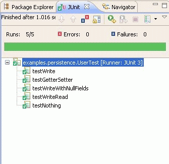

CodePro can now generate tests for classes that implement the EJB3 Interface ( java.sun.com/ejb). Enterprise JavaBeans (EJB) technology is the server-side component architecture for Java Platform, Enterprise Edition (Java EE). EJB technology enables rapid and simplified development of distributed, transactional, secure and portable applications based on Java technology. The tests that are generated use the EJB3Unit Testing framework, ( EJB3unit) which is an out of container testing framework for EJB3.
CodePro recognizes Entities as classes which are annotated with the
javax.persistence.Entity annotation and generates tests for them.
Let’s start out with a simple example of an entity User :
@Entity
@Table(name = "USERS")
public class User implements Serializable {
private static final long serialVersionUID = 1L;
private String userId;
private String firstName;
private String lastName;
public User() {
}
public User(String firstName, String lastName, String userId) {
this.userId = userId;
this.firstName = firstName;
this.lastName = lastName;
}
@Id
@Column(name = "USER_ID", nullable = false)
public String getUserId() {
return userId;
}
public void setUserId(String userId) {
this.userId = userId;
}
@Column(name = "FIRST_NAME", nullable = false)
public String getFirstName() {
return firstName;
}
public void setFirstName(String firstName) {
this.firstName = firstName;
}
@Column(name = "LAST_NAME", nullable = false)
public String getLastName() {
return lastName;
}
public void setLastName(String lastName) {
this.lastName = lastName;
}
}
In order to generate tests for this entity, right click on the class in the Package Explorer and choose CodePro Tools > Generate Test Cases.
This will create and open a new test case called
UserTest.
public class UserTest extends BaseEntityFixture<User>
{
/**
* Initialize a newly create test instance to have the given name.
*
* @param name the name of the test
*
* @generatedBy CodePro
*/
public UserTest() {
super(User.class);
}
}
The generated test uses the
BaseEntityFixture from the EJB3Unit framework to test the entity. Right click on the test class and choose
Run as > JUnit Test to execute the test.

The JUnit View shows the tests that were executed – the framework automatically generates tests that
CodePro generates tests for entities which have the following relations – OneToMany, ManyToOne and OneToOne.
The
User entity in the above example is modified to contain a OneToOne and a OneToMany relation.
@OneToOne(cascade = CascadeType.ALL)
public ContactInfo getContactInfo() {
return contactInfo;
}
@OneToMany(mappedBy = "user", cascade = CascadeType.ALL)
public Set<Category> getCategories() {
return categories;
}
The generated test
UserTest is shown below.
public class UserTest extends BaseEntityFixture<User>
{
/**
* All entities referenced in <code>{@link User}</code>.
*/
private static final Class[] USED_ENTITIES = {
Item.class, Bid.class, Bidder.class, Category.class, ContactInfo.class, Seller.class
};
/**
* Generators to generate the entities specified in the mapping.
*/
private static final Generator[] SPECIAL_GENERATORS = {
new MyContactInfoCreator(), new MyCategoryCreator()
};
/**
* Initialize a newly create test instance to have the given name.
*/
public UserTest() {
super(User.class, SPECIAL_GENERATORS, USED_ENTITIES);
}
/**
* Bean Generator Class
*/
@GeneratorType(className = ContactInfo.class)
private static final class MyContactInfoCreator extends SingleBeanGenerator<ContactInfo>
{
private MyContactInfoCreator()
{
super(ContactInfo.class);
}
}
/**
* Bean Generator Class
*/
@GeneratorType(className = Set.class,field = "categories")
private static final class MyCategoryCreator extends BeanCollectionGenerator<Category>
{
private MyCategoryCreator()
{
super(Category.class, 10);
}
}
}
The test has special generators for the entities specified in the relationships – a
SingleBeanGenerator for the OneToOne relation and a
BeanCollectionGenerator for the OneToMany relation. More information and the generators and the test framework can be found at
EJB3Unit.
CodePro recognizes classes that have the
javax.ejb.Stateless or
javax.ejb.Stateful annotations as Session Beans and generates tests for them. The
EJB3Unit test framework is used in order to facilitate out of container testing.
An example of a Session Bean that allows a user to place a bid.
@Stateless(name = "PlaceBid")
public class PlaceBidBean implements PlaceBid {
@PersistenceContext
private EntityManager em;
public Bid addBid(Bid bid) {
System.out.println("Adding bid, bidder ID=" + bid.getBidder()
+ ", item ID=" + bid.getItem() + ", bid amount="
+ bid.getBidPrice() + ".");
return save(bid);
}
private Bid save(Bid bid) {
em.persist(bid);
System.out.println("Your bid item id: " + bid.getItem()
+ " was successful.");
System.out.println("Your bid id is: " + bid.getBidId());
return bid;
}
}
Right click on the class in the Package Explorer and choose
CodePro Tools > Generate Test Cases. This will create and open a new test case called
PlaceBidBeanTest.
public class PlaceBidBeanTest extends BaseSessionBeanFixture<PlaceBidBean> {
/**
* All entities referenced in <code>{@link PlaceBidBean}</code>.
*/
private static final Class[] usedBeans =
{ Bid.class, Bidder.class, Item.class, Category.class, User.class, ContactInfo.class, Seller.class};
/**
* An instance of the class being tested.
*
* @see PlaceBidBean
*/
private PlaceBidBean fixture;
/**
* Initialize a newly create test instance to have the given name.
*
* @param name the name of the test
*/
public PlaceBidBeanTest() {
super(PlaceBidBean.class, usedBeans);
}
/**
* Return an instance of the class being tested.
*
* @return an instance of the class being tested
*
* @see PlaceBidBean
*/
public PlaceBidBean getFixture()
throws Exception {
if (fixture == null) {
fixture = getBeanToTest();
}
return fixture;
}
/**
* Run the Bid addBid(Bid) method test.
*/
public void testAddBid_fixture_1()
throws Exception {
PlaceBidBean fixture2 = getFixture();
Bid bid = new Bid(new Bidder(), new Item(), new Double(-1.0));
Bid result = fixture2.addBid(bid);
assertNotNull(result);
}
}
Like CodePro’s normal test generation, we create a fixture of the class under test, execute the method under test, and make assertions on the results.